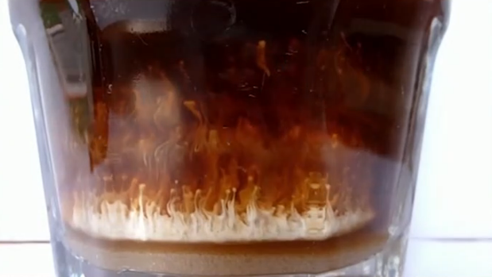

走进物理海洋学。
# 第一章：物理海洋的研究方法
| 概念 - 观测 | 观测与科学 | 描述性物理海洋学 | Descriptive Oceanography |
| 理论 | 数学 | 物理海洋学，推荐中国海洋大学海洋学慕课 | Dynamical Oceanography |
| 应用 - 模拟 | 模式及其他 | 其他科学 | 推荐《Ocean Modelling》 |
# 现象
-
冰层形成

-
盐指 - 双扩散，在极地是重要海洋特征
 -
涡流


# 理论
扩散方程，先出来见个面。

# 模拟
地球的数值模拟：earth :: 风、气象、海洋状况的全球地图
引入：海洋数值模拟这门课。
# 第二章：海水性质
# 地形
海洋地形很多是平坦的，海的平均深度远大于陆地平均高度。
海平面高度受什么影响？
大洋各有特征，南极洲冰面积增加的原因是？
# 温度
位势温度：海水微团从海洋中任意深度（压强为 p）以绝热方式提升到海面（压强为大气压 pa）时具有的温度。
压力增加，温度升高。海水的压力导致温度增加在深海中比较明显。位温能够移除由压力带来的温度升高的温差。
海洋温度数据:WOA V2 2013 data
Matlab 小程序